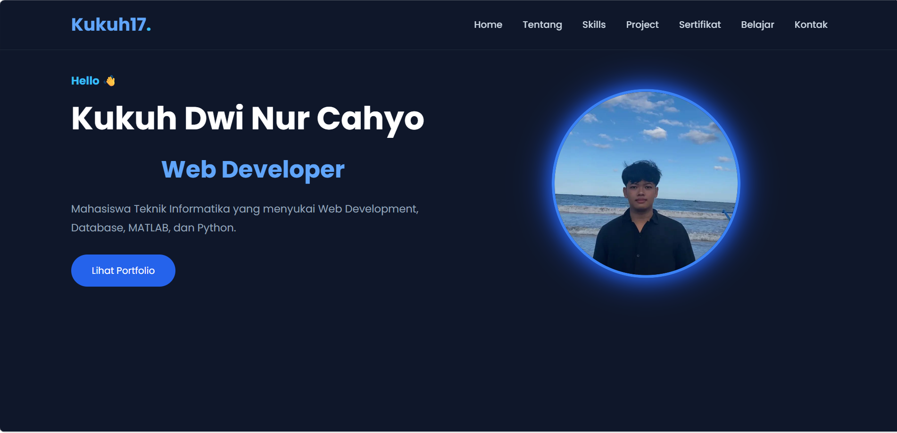
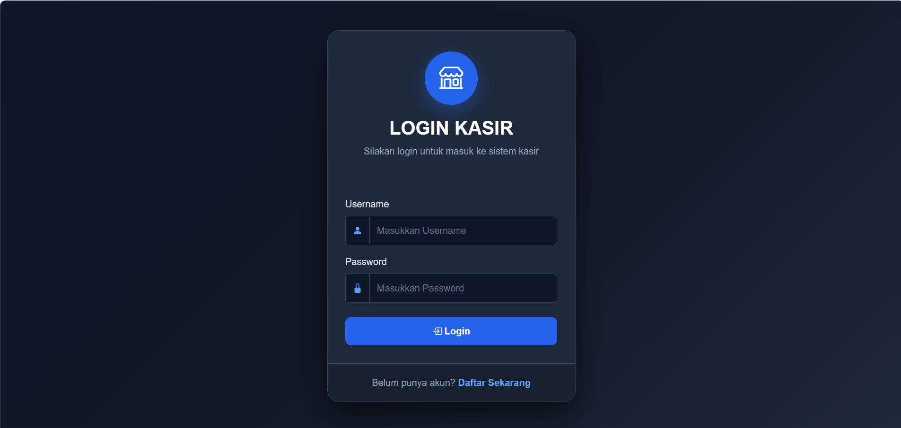

Beberapa project yang pernah saya kerjakan selama kuliah dan belajar mandiri.

Website portofolio pribadi untuk menampilkan profil profesional, kumpulan proyek, sertifikat, dan perjalanan belajar saya sebagai mahasiswa Teknik Informatika.
Teknologi
HTML • CSS • JavaScript

Aplikasi sistem kasir berbasis web yang dirancang untuk mempermudah pengelolaan operasional toko secara digital dan terstruktur.
Teknologi & Backend
PHP (Native) • MySQL • CSS • HTML